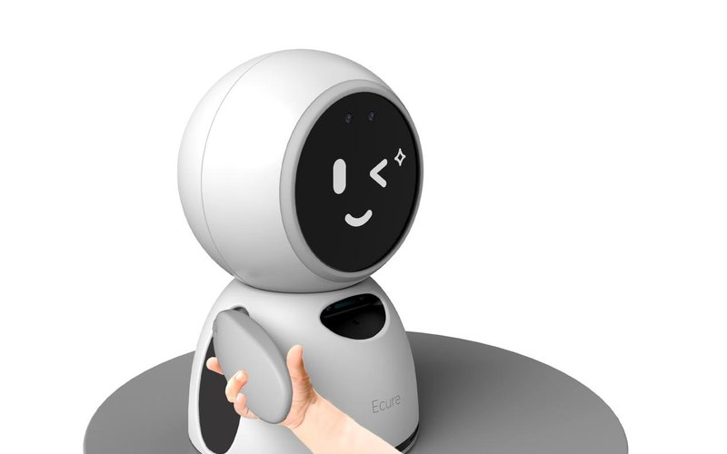
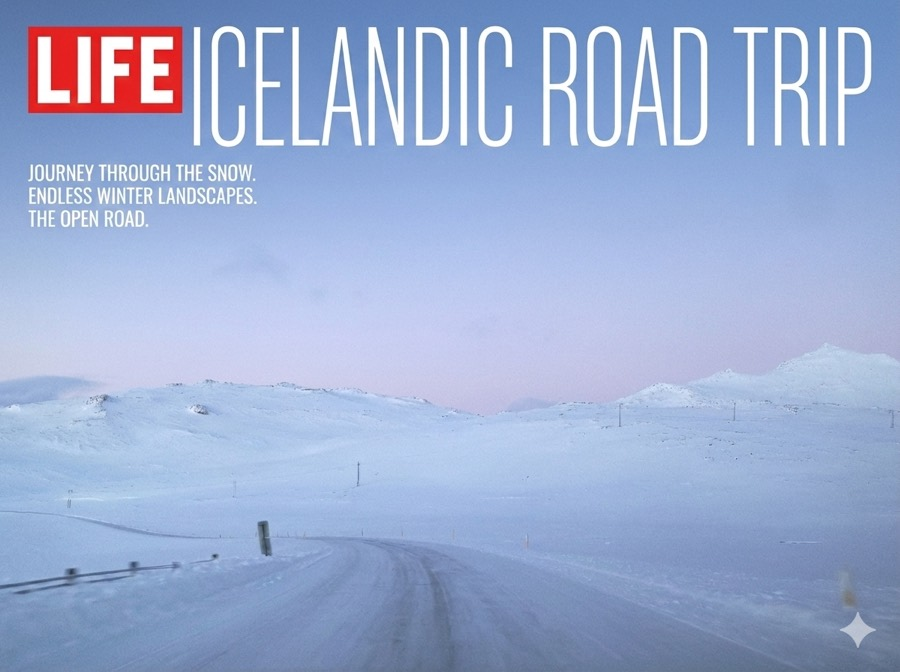
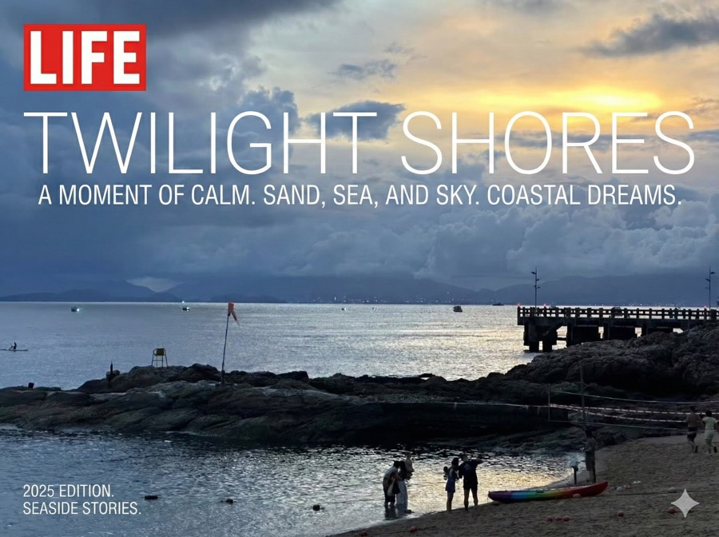

About关于
Education教育背景
Harbin Institute of Technology (Shenzhen)哈尔滨工业大学（深圳）
B.Eng. in Computer Science and Technology · transferred from Industrial Design本科 · 计算机科学与技术（转自工业设计）
Expected Jun 2028预计 2028.06 毕业
Most vision-language evaluations still show a model a static picture and ask a multiple-choice question. Once the model has to act inside an environment—walk through a room, rotate a 3D structure, or edit code across several turns—those scores stop predicting whether it will actually finish a task. My work at Tencent’s Foundation Model Dept. is about that gap: I build interactive test environments where the model only sees what a camera sees, automated grading pipelines for open-ended outputs, and trajectory analysis that tells the training team why a model failed and what data or reward to add next.大多数视觉大模型的评测还是“给一张静态图、做一道选择题”。但只要让模型进环境里连续行动——在房间里走动、旋转三维结构、或者多轮修改代码——静态榜单上的高分就很难预测它能不能把事做完。我在腾讯基础模型部主要做三件事：搭只给第一人称画面、不给坐标真值的交互式测试环境；搭开放式输出的自动判分链路；以及逐局拆解失败轨迹，告诉训练侧模型卡在哪一步、下一轮该补什么数据或奖励。
Before Tencent, I worked on agent evaluation at ByteDance (Volcano Engine), where I built a LangGraph grading system that cut a release evaluation from a week to a day, and on memory-driven game NPCs at Parametrix. I entered university in industrial design before transferring to computer science: Ecure, an intervention robot for autistic children from my design year, won an iF DESIGN AWARD 2025, and I later built Hseek, a campus matching web app that reached 2,000+ students in five days.来腾讯之前，我在字节跳动 · 火山引擎做过手机助手 Agent 的自动评测系统（把版本评测从一周压到一天），在超参数科技做过带长期记忆的游戏 NPC。我大一读的是工业设计，大二转到计算机：读设计时参与的孤独症儿童干预机器人 Ecure 拿了 2025 年德国 iF 设计奖；转专业后独立开发了校园匹配网站哈机觅 Hseek，上线 5 天覆盖 2,000 多名同学。
Off screen, I travel whenever I can and design a magazine cover for each trip. I also like city walks, exhibitions, Li Jian’s songs, karaoke, and good food.工作之外，有空就去旅行，每段旅程会自己排版做一张杂志封面；平时喜欢 City Walk、看展、听李健、K 歌和找好吃的。
Research研究
-
Space Track: How Multimodal Agents Perceive, Update, and Act in Changing 3D Worlds
Chenglong Shi*, Zekai Yuan*, Yue Song, Jon Pu, Will Wu · 2026
Existing 3D benchmarks mostly test static rooms. We built 5 walkable first-person worlds that change as the agent acts—an apartment being renovated, a non-Euclidean corridor whose staircase loops back on itself, a patrolling sanatorium—and 59 long-horizon tasks (including 15 counterfactual controls where one spatial rule is flipped). Every task seed is verified solvable by an oracle solver, and an isolated server audits completion so agents cannot cheat. Across 9 frontier models (885 episodes, 46k steps), the best model finishes only 55% of tasks. A recurring failure is that perception and action come apart: in the looping corridor, models accurately describe in text that they have returned to the same floor, yet in 15 of 18 failed runs they declare a reachable room “impossible” instead of trying the other staircase. Supplying a ground-truth map raises task success from 25% to 47%.现有三维基准大多测静态房间。我们搭了 5 个会随智能体行动而改变的第一人称三维世界（边拆改边施工的公寓、楼梯会绕回原处的非欧走廊、按规律巡逻的疗养院等），设计了 59 个长程任务，其中 15 个是只改动一条空间规则的反事实对照；每道题都经求解器验证必有解，并由隔离服务端判分防作弊。我们在 9 个前沿模型上跑了 885 局、4.6 万步，最强模型也只做完 55%。一个典型现象是“看懂了但做不对”：在循环走廊里，模型能用文字准确说出自己绕回了原楼层，却在 18 局失败中的 15 局里直接判定目标房间“不可达”，不去试走廊另一头的楼梯。一旦直接给真值地图，主任务成功率就从 25% 升到 47%。

-
3D Physical Manipulation & Mechanism Puzzles from First-Person RGB仅凭第一人称 RGB 的三维物理操作与机械解谜基准
Co-first author · under double-blind review, title withheld共同一作 · 双盲在投，暂隐去名称
In many 3D benchmarks the agent is handed ground-truth object coordinates, which turns a perception problem into pure text planning. Here the agent sees only rendered RGB images and must rotate the camera, probe objects, and manipulate Lego bricks and mechanical linkages across up to 100 steps—108 solver-verified instances across 36 task families (structural stability, spatial assembly, multi-view reconstruction, and temporal mechanism reasoning). Evaluating 12 models (including two in-house Hunyuan checkpoints) alongside a controlled diagnostic that selectively injects 3D coordinates or high-level plans showed that the main bottleneck is not planning: models fail because they cannot estimate metric 3D geometry from 2D views, leading to collisions and repeated observation loops.很多三维评测直接把物体坐标喂给模型，本质上测的是文本规划而不是视觉。在这项工作里，模型只能看渲染出的 RGB 画面，通过转视角、试探性拨动，在最多 100 步内完成乐高搭建与机械连杆解谜——共 6 大类、36 个题族、108 道经求解器验证的题目，覆盖结构力学、空间拼装、多视图重建与时序机关推理。我们跑了 12 个模型（含混元自研 2 个版本），并做了正交受控实验（分别单独注入精确三维坐标或高层规划），发现真正的瓶颈不在高层规划，而在模型没法从二维画面估准三维几何关系，大量失败都死在碰撞和反复观察的死循环里。
-
Turning Failed Agent Trajectories into SFT & RL Training Signals把智能体失败轨迹转成 SFT 与 RL 的训练改进项
A leaderboard score tells a model team that their checkpoint lost, not what to change in training. Existing trace checkers were written for code and document agents, so I built an inspection tool on top of Agent Trace to diagnose multi-turn 3D trajectories step by step and map each failure onto an embodied skill taxonomy. Comparing our in-house RL checkpoint against GPT, Gemini, and Claude across all 59 tasks isolated four failure modes: (1) poor first-person distance and angle estimation—the agent reaches the right room, then burns 100+ steps inching left and right to align its crosshair (17 of 52 failures); (2) no external memory during long exploration—while Claude writes
notes.md51 times to record intersections, the in-house model relies on context alone, gets lost, and calls solvable tasks “impossible”; (3) weak error recovery and cross-environment tool habits; and (4) inability to compute motion cycles from consecutive frames. These findings went directly into the post-training roadmap: three targeted datasets (metric 3D perception, exploration traces with file-based state notes, multi-frame timing), “fail → verify → backtrack” trajectories for SFT, and step-level RL penalties for invalid tool calls and aiming loops.跑分只能告诉算法团队“模型输了”，但没法回答下一轮训练该改什么。原来的质检算子只适配写代码和写文档轨迹，我基于 Agent Trace 搭了一套多模态多轮轨迹归因工具，把每一局失败映射到具身原子能力表上。拿自研 RL 模型和 GPT、Gemini、Claude 在 59 道题上逐局对比后，定位出四类死因：① 第一人称距离和转角估不准——能找对房间，但在目标跟前靠“左转 10°、前进 0.3 米”反复微调对准星，把步数耗光（52 局失败里占 17 局，是头号死因）；② 走长图不记外部状态——Claude 在多房间任务里会主动写 51 次本地笔记记路口拓扑，自研模型只靠上下文硬记，迷路后直接调declare_impossible误判无解；③ 遇到操作报错不排查原因，还会习惯性调用其他环境的工具；④ 不会从连续多帧画面推算机关运动周期。这份报告直接转成了后训练改进方案：补三类数据（第一人称度量感知、带写文件记状态的长程探索轨迹、多帧时序推算），SFT 阶段加入“失败→验证原因→回退换路”的纠错样本，RL 阶段对非法调用与反复微调加惩罚并做步级过程监督。
Experience经历
-
2026.08 — Present至今
Evaluation & Benchmark Intern · Tencent, Foundation Model Dept.评测 Benchmark 实习 · 腾讯 · 基础模型部
Alongside the two 3D benchmark papers above, I work on visual perception benchmarks and automated grading for Hunyuan’s multimodal models:除上方两项三维空间基准与轨迹归因外，主要负责混元多模态模型的视觉感知出题与开放式题目自动判分：
- EyeBench-HYTurning user complaints into a parametric vision benchmark: collected real community failure cases of vision models (counting overlapping lines, maze turns, topological connectivity), then wrote Python generators that synthesize tasks with exact programmatic ground truth and a three-tier difficulty split filtered across four models—so new test batches can be produced on demand without human labeling noise.从社区真实翻车案例逆向构建视觉基准：收集用户反馈的模型看图短板（数缠绕线交点、迷宫转弯、拓扑连通等），用脚本做参数化出题与程序真值生成，经 4 个模型两轮跑测筛出三档难度，搭起“按比例出题 → 脚本算真值与抽检 → 多模型跑分 → 迭代配比”的自动流水线与在线看题看板。
- Rubric JudgeAutomated grading for open-ended multimodal tasks: human grading of STEM drawing and long-form answers was slow and inconsistent across annotators. I standardized rubric writing, benchmarked 6 judge models, and built an automated pipeline tracking false-pass rate, false-reject rate, and Cohen’s Kappa—reaching 93.9% agreement with human graders and surfacing a prompt-truncation bug that had been distorting internal model rankings.开放式多模态题目的 Rubric 自动判分链路：针对作图题与长回答人工阅卷慢、口径不一的问题，统一评分细则写法，横评 6 类裁判模型完成选型，搭起“标准 → Judge 机评 → 漏拦率 / 误伤率 / Kappa 一致性监控 → 可视化看板”的自动链路，机评与人评一致率达 93.9%，并抓出评测管道截断答案块导致模型排名失真的口径漏洞。
- Exploring探索中Scientific 3D (Sci3D-Bench): 300 program-verified questions built from real protein structures (PDB / AlphaFold) and 65 clinical whole-body CT scans. Raw
.pdband volume files are locked outside the container so agents must rotate, clip, and scroll slices through a viewer tool (~45% frontier accuracy; caught 38os.walk('/')attempts by a model trying to locate raw source files on disk).科学三维（Sci3D-Bench）：用真实蛋白结构（PDB / AlphaFold）和 65 例全身 CT 合成 300 道程序核验真值的三维题。原始文件锁在容器外，模型只能调查看器旋转、剖切、翻阅切片作答；前沿模型初测全对率约 45%，后台还抓到某模型连续执行 38 次全盘搜索试图偷看源文件。 - Exploring探索中Code-to-video (coding2video): evaluating models that write animation code (HTML/SVG/Canvas, Manim) rendered into video. Designed a “1 generation + 4 chained edits” task where grading diffs the DOM/frame render traces before and after each edit rather than relying on a noisy vision judge; also audited the public Code2Video-Compass benchmark and documented 6 evaluation flaws.代码生成视频（coding2video）：评测模型写动画代码并渲染成视频的能力。设计“1 轮生成 + 4 轮链式修改”的可编辑性实验，用前后两轮渲染轨迹差分做确定性判分，视觉模型只兜底轨迹读不到的画面项；同时审查公开基准 Code2Video-Compass，定位出提示词泄漏参考内容、同模型既参赛又当裁判等 6 处方法问题。
-
2026.04 — 2026.08
Agent Evaluation & Product Intern · ByteDance, Volcano EngineAgent 评测/产品实习 · 字节跳动 · 火山引擎
Worked on a phone-assistant agent that routes user requests across search, tools, and vertical services. Each release previously took a full week of manual review, and a single-prompt LLM judge agreed with human annotators only 60% of the time on live traffic. I independently built a multi-step evaluation harness on LangGraph: it decomposes the conversation state, calls live web search to verify time-sensitive facts, scores each rubric item, and routes low-confidence cases to human review—raising machine–human agreement to 85% and cutting release evaluation from 7 days to 1 day. As the assistant moved from a monolithic prompt to a modular pipeline (query rewrite → intent → tool routing → MCP), I co-defined the routing spec and acceptance benchmark across 15 industries × 9 intents (95% routing accuracy).负责手机助手 Agent 的评测与模块化改版。此前每次发版要靠人工看一周，单次提示词机评在线上回流样本上和人评一致率只有 60%。我基于 LangGraph 独立搭了一套状态机评测系统：先拆解对话状态，遇到时效性问题自动调联网搜索核验事实，再逐条按 Rubric 判分，低置信度样本自动分流人工复核——把线上回流机评-人评一致率从 60% 提到 85%，单次版本评测从 7 天压到 1 天。同时参与助手从端到端单链路拆成模块化架构（改写 → 意图 → 工具路由 → MCP），负责 15 个行业 × 9 类意图的路由边界定义与验收基准（路由准确率 95%），搭起“线上回流 → 语义聚类抽样 → 上下文重写 → 机评 → 人工质检”的出题链路。
-
2025.12 — 2026.03
AI NPC Agent · ParametrixAI NPC Agent · 超参数科技
Built interactive game NPCs that need to remember past conversations and shift behavior as relationship states change—an affinity-driven companion and a dynamic merchant that negotiates prices—using Python state machines, Redis for short-term state, and Milvus vector retrieval for long-term memory, supporting live demos for 3 studio clients. Also owned pre-launch QA for v1.0 of the company’s Coze/Dify-style workflow platform, building complex multi-node agents to stress-test the system and isolating 30+ P0/P1 bugs before release.用 Python、Redis（短期状态）和 Milvus（向量长期记忆）搭建需要跨局记住玩家、随关系变化改变行为的游戏 NPC——包括按好感度推进剧情的陪伴角色和会动态议价的交易员，支撑了 3 家游戏客户的实机演示。同时负责公司自研类 Coze / Dify 智能体编排平台 V1.0 的上线验收，通过搭复杂多节点工作流做压力验证，定位并推动修复 30 多项 P0/P1 缺陷。
Projects作品
-
Hseek (New 来): campus matching platform哈机觅 Hseek（New 来）：校园匹配平台
Personal startup · founder & solo full-stack developer · 2026.03 — present个人创业项目 · 创始人 / 独立全栈开发 · 2026.03 至今
A weekly matching web app for university students in Shenzhen. Starting with no backend experience, I designed, built, and deployed the full stack in two days—campus identity verification, a compatibility questionnaire, a weighted stable-matching algorithm that pairs users each week, and two-way opt-in chat.面向深圳高校学生的按周匹配交友网站。当时我还没有后端开发经验，用两天时间独立走完了产品设计、前后端开发与部署上线：校园身份认证、性格与偏好问卷、按周运行的加权稳定匹配算法，以及双方确认后解锁联系。
500+ sign-ups on day one, 2,000+ users within 5 days上线首日注册 500+，5 天覆盖 2,000+ 用户

-
Ecure: intervention robot for autistic childrenEcure 孤独症儿童智能干预机器人
iF DESIGN AWARD 2025 · Professional Concept: Product Design · team memberiF DESIGN AWARD 2025（专业概念：产品设计）· 团队成员
Children on the autism spectrum often have very different sensory thresholds and find bright tablet screens overwhelming. Ecure is a tabletop companion robot that replaces screen-based drills with AR games projected onto the real table, while reading facial cues and touch to adapt training difficulty and let therapists track progress remotely. Selected from nearly 11,000 entries across 66 countries (one of 188 Professional Concept winners worldwide) and included in the iF Design Trend Report 2025.孤独症谱系儿童对光声触觉的敏感阈值差异很大，传统平板训练又容易造成屏幕刺激过载。Ecure 是一台桌面伴学机器人：用投在桌面上的 AR 实景互动代替电子屏幕，根据孩子的情绪表情与触觉反馈实时调整交互强度，并配治疗师远程跟进端。作品从 66 个国家和地区近 11,000 件参赛方案中获奖（全球专业概念类仅 188 件），并入选《iF 2025 设计趋势报告》示范案例。

Life生活
Every trip becomes a magazine cover.每段旅程，都会自己排版做一期杂志封面。






Contact联系
Feel free to reach out about multimodal evaluation, agent benchmarks, post-training data, or internships.欢迎交流多模态评测、智能体基准、后训练数据，或实习与合作机会。
cdjabah13@gmail.com